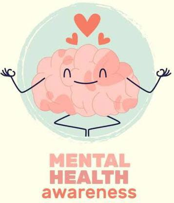

Sejarah
Secara etimologis kata “mental” berasal dari kata latin,yaitu ”mens” atau ”mentis” artinya roh, sukma, jiwa, atau nyawa. Di dalam bahasa Yunani, kesehatan terkandung dalam kata hygiene, yang berarti ilmu kesehatan. Kesehatan mental merupakan aspek sangat penting bagi setiap fase kehidupan manusia. Kesehatan mental terentang dari yang baik sampai dengan yang buruk. Hampir setiap orang, mungkin dalam hidupnya mengalami kedua sisi rentangan tersebut, kadang-kadang keadaan mentalnya sangat sehat, tetapi dilain waktu justru sebaliknya. Pada saat mengalami masalah kesehatan mental, seseorang membutuhkan pertolongan orang lain untuk mengatasi masalah yang dihadapinya tersebut. Sejarah Kesehatan mental merupakan suatu cerminan pemahaman masyarakat tentang gangguan mental dan tindakan yang diberikan.
Sejarah Perkembangan Kesehatan Mental Penyakit mental sama usianya dengan manusia. Meskipun secara mental belum maju, nenek moyang homo sapiens mengalami gangguan-gangguan mental seperti halnya dengan homo sapiens sendiri. Mereka dan keturunan mereka sangat takut akan predator. Mereka menderita berbagai kecelakaan dan demam yang merusak mental mereka, dan mereka juga merusak mental orang-orang lain pada perkelahian-perkelahian. sejak itu manusia dengan rasa putus asaselalu berusaha menjelaskan penyakit mental, mengatasinya, dan memulihkan kesehatan mental.